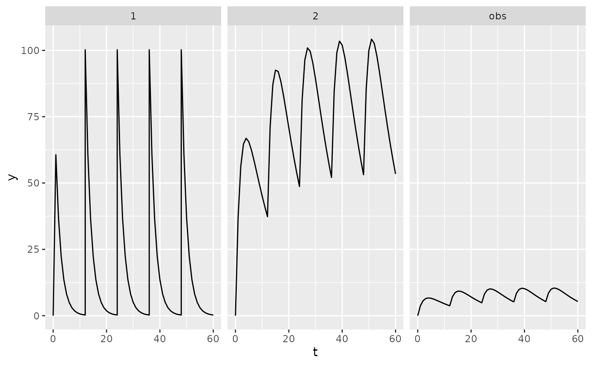

Installation
PKPDsim can be installed from CRAN:
install.packages("PKPDsim")Or you can install the development version from GitHub:
devtools::install_github("InsightRX/PKPDsim")First simulation
The main simulation function in PKPDsim is
sim(). To be able to simulate a dosing regimen for a
specific drug, at least the following three arguments
are required:
-
ode: the compiled ODE model (created using thenew_ode_model()function) -
parameters: alistof parameter values for the model -
regimen: the dosing regimen (created using thenew_regimen()function)
The model library in PKPDsim contains a small library of built-in PK and PD models, but of course more interesting is its ability to handle user-specified ODE systems. However, as a first example, let’s implement the most simple example from the library:
p <- list(CL = 1, V = 10, KA = 0.5)
pk1 <- new_ode_model("pk_1cmt_oral")
r1 <- new_regimen(
amt = 100,
n = 5,
interval = 12
)
dat <- sim(
ode = pk1,
parameters = p,
regimen = r1
)You probably noticed that the new_ode_model()-step took
a few seconds to finish, while the simulation itself was in the order of
milliseconds. In new_ode_model(), the model is compiled
from C++ source code to binary code, which takes a few seconds. However,
this has to be done only once. After compilation, the model is then
available to be used in sim() for as long as the R session
is open.
Let’s look at the output. PKPDsim will output data in
the “long” format, i.e. one row per observed timepoint, and split by
compartment:
head(dat)## id t comp y obs_type
## 1 1 0 1 100.00000 1
## 4 1 1 1 60.65307 1
## 40 1 2 1 36.78794 1
## 76 1 3 1 22.31302 1
## 112 1 4 1 13.53353 1
## 148 1 5 1 8.20850 1To check what output was produced by sim(), let’s plot
it (installation of ggplot2 required).
ggplot(dat, aes(x = t, y = y)) +
geom_line() +
facet_wrap(~ comp)
Custom ODE model
We can write the same exact model using custom ODE code. The
following example will also only output the concentration
(only_obs=TRUE), and not the amounts in each compartment.
We’re also going to use an infusion instead of bolus injection:
pk2 <- new_ode_model(
code = "dAdt[1] = -(CL/V) * A[1]",
obs = list(cmt = 1, scale = "V"),
dose = list(cmt = 1)
)
r2 <- new_regimen(
amt = 100,
n = 5,
interval = 12,
type = "infusion",
t_inf = 2
)
dat2 <- sim(
ode = pk2,
parameters = p,
regimen = r2,
only_obs = TRUE
)Included models
PKPDsim includes definitions of several PK/PD models used in the InsightRX platform.
These models can be installed as R packages using the
model_from_api() function.
model_from_api(
system.file("models", "pk_vanco_anderson.json5", package = "PKPDsim"),
to_package = TRUE,
install_all = TRUE
)Please note that these models may differ from those used in production by InsightRX. They are provided for demonstration purposes only, and should not be used for dosing patients.
Example usage
To simulate PK, provide the model and parameters to
PKPDsim::sim() along with a dosing regimen and
covariates.
## Create dosing regimen and covariates
reg <- new_regimen(
amt = 100,
n = 3,
interval = 12,
type = "infusion",
t_inf = 1
)
covs <- list(
WT = new_covariate(4),
PMA = new_covariate(42),
CR = new_covariate(0.5),
CL_HEMO = new_covariate(0)
)
## Perform simulation
sim(
ode = pkvancoanderson::model(),
parameters = pkvancoanderson::parameters(),
regimen = reg,
covariates = covs
)